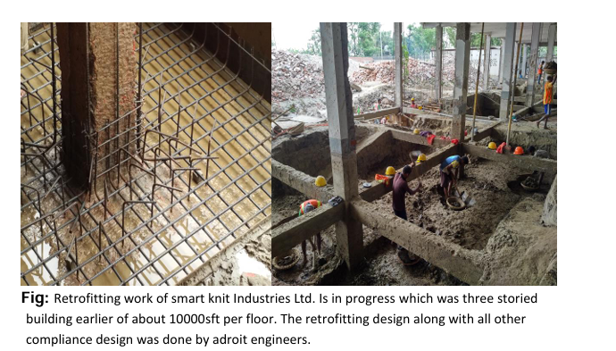

Project context
The Smart Knit assignment involved investigation, as-built verification and rehabilitation of an existing industrial reinforced-concrete building. The work required comparison of available drawings against actual construction and field investigation of structural components.
Investigation priorities
- Measure grid lines, member dimensions, storey heights and actual structural layout.
- Verify columns, beams, slabs, walls and extensions against available drawings.
- Excavate selected foundations to confirm footing geometry and condition.
- Use appropriate destructive and nondestructive testing to establish material properties.
- Prepare corrected as-built drawings before detailed structural assessment.
Engineering lesson
Existing drawings are evidence—not proof of the constructed condition. Rehabilitation analysis should be based on verified geometry, reinforcement, material properties, load history and present condition. Unverified assumptions can shift the apparent governing failure mode and lead to ineffective strengthening.
From investigation to construction
The engineering workflow links field evidence to analytical modelling, capacity evaluation, retrofit detailing and staged construction. Close coordination with contractors is essential where strengthening must be integrated with existing reinforcement and foundations.